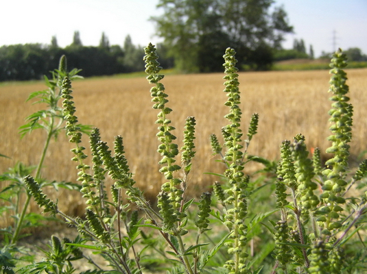
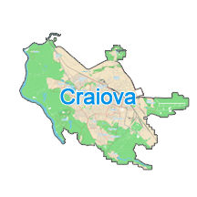

Tot ce trebuie să știi despre această plantă invazivă și cum te protejezi în sezon.

Ambrosia artemisiifolia — „iarba pârloagelor" sau „floarea pustei". Buruiană invazivă din America de Nord, rezistentă la secetă, cu până la 30.000 de semințe per plantă, viabile în sol până la 40 de ani.

Un studiu realizat la Spitalul Filantropia Craiova arată că 49% din pacienții cu rinită alergică sunt sensibili la ambrozie — cel mai ridicat procent față de orice alt alergen testat.
⚠ RAADPFL Craiova are obligația să cosească terenurile până pe 30 iunie. Presa locală semnalează că operațiunea se efectuează parțial — ambrozia apare și în zone centrale.
Polenizarea începe la mijlocul lunii iulie și durează până în octombrie, cu vârf în august–septembrie. Aerul este cel mai încărcat între 9:00–11:00. Monitorizează nivelul pe Copernicus sau AirMatters.
⚠ Reacții încrucișate posibile după consumul de banane, castraveți, pepene sau zucchini. Detalii la Medic Line.
Consultă un alergolog la Spitalul Filantropia, Regina Maria sau MedLife.
Conform Legii nr. 62/2018, proprietarii sunt obligați să cosească ambrozia înainte de 30 iunie. Amenzi aplicate de Poliția Locală Craiova. Raportează la Primăria Craiova sau prin această aplicație.
Calendar